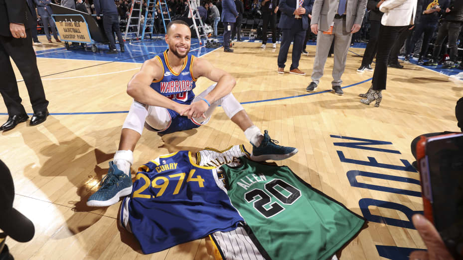

Stephen Curry is a professional American basketball player with the Golden State Warriors. The son of former NBA player Dell Curry, Stephen first garnered national attention for his impressive play at Davidson College. He was drafted in 2009 by Golden State and eventually developed into one of pro basketball's top players with his stellar shooting skills. After garnering Most Valuable Player honors and helping the Warriors win the NBA championship in 2015, Curry led the team to a league-record 73 wins the following season. In May 2016, Curry became the first person to be named MVP by unanimous vote in NBA history, and one of only 11 players to win the MVP award two years in a row. For more information click here.
